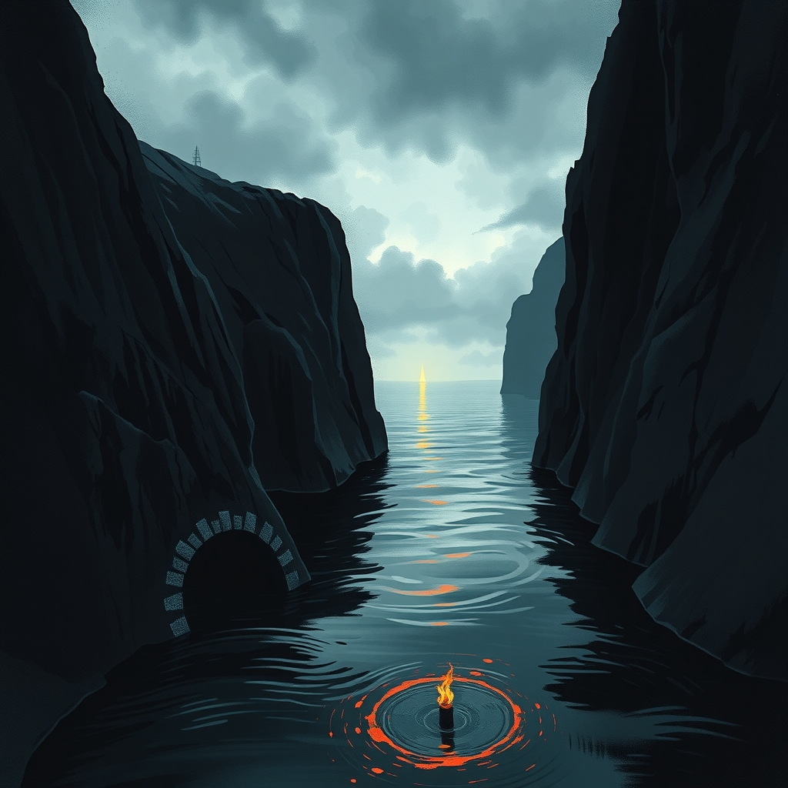
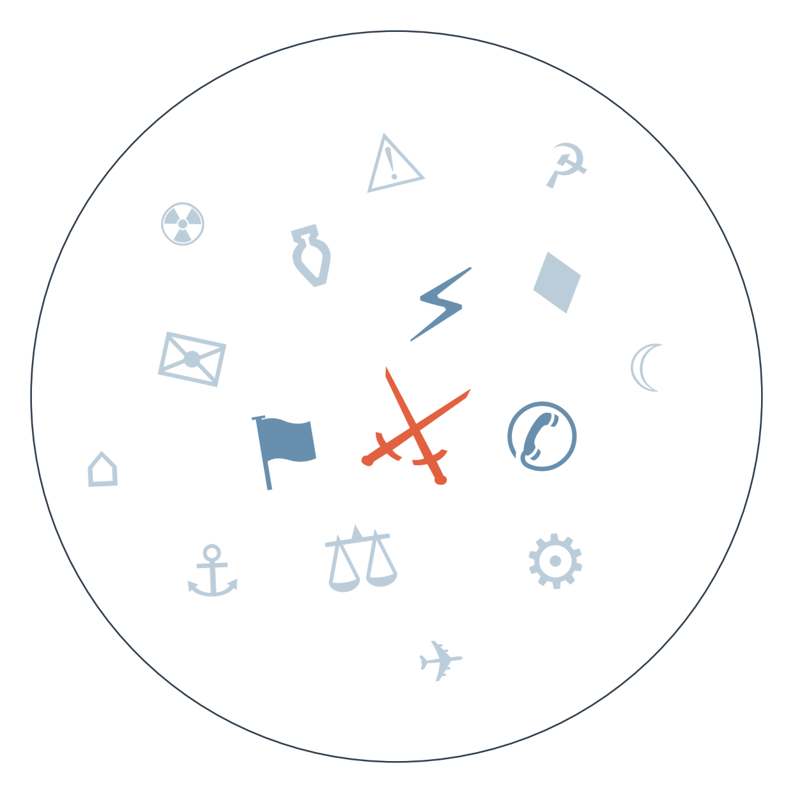

Ранковий бріф · огляд світової преси

Нафта Brent за добу підскочила вище 108-109 доларів — найвищого рівня з травня. Хусити захопили стратегічний порт Моха в Ємені; видобуток Саудівської Аравії впав на 23% через відновлення війни з хуситами на тлі ескалації навколо Ормузької протоки (дані поки одноджерельні).
Путін і Сі прибули до Делі на саміт БРІКС, який відкривається під тінню одразу двох активних воєн — в Україні й на Близькому Сході. Формат саміту, задуманий як майданчик альтернативної глобальної координації, цього разу демонструє радше межі впливу об'єднання: жодна зі сторін не приїхала з планом деескалації.
Канада та Україна підписали угоду про партнерство на сто років із фокусом на спільне виробництво дронів і систем протиповітряної оборони. Це перше зобов'язання партнера України, розписане на настільки довгий горизонт, — символічний контраст до щотижневих новин про паузи й перемовини навколо самої війни.

Сюжет 1: захоплення хуситами порту Моха в Ємені
Замовчують: жодне з цих видань не згадує втрати серед цивільного населення самої Мохи чи гуманітарну ситуацію в місті.
Чому розходяться: канадське видання пише для економічної аудиторії, якій важливий вплив на ціни, тому кадр — "загроза потокам". FT обслуговує інвесторів і партнерів Саудівської Аравії, тому подає це як поразку союзника Вашингтона. Foreign Policy як аналітичний майданчик для зовнішньополітичного класу вписує подію в довгу стратегічну лінію Ірану. France 24 як публічний мовник тримається нейтрального факту, уникаючи інтерпретації в бік будь-якої зі сторін.
Сюжет 2: знищення тунелів Хезболли в Лівані
Замовчують: жодне джерело не наводить точних втрат серед бойовиків Хезболли чи цивільних поблизу хребта Алі-ат-Тахер.
Чому розходяться: Israel Hayom як праве видання підтримує наратив уряду про силу; Haaretz як опозиційне ліве видання вписує будь-яку військову дію в ширшу критику Нетаньягу; Iran International, фінансоване колами, опозиційними до Тегерана, підкреслює загрозу прямої війни, щоб показати провал іранської стратегії опосередкованих ударів; SCMP тримає дистанцію, бо для гонконгської аудиторії це регіональна, а не власна історія.
09.09 США завдали удару по п'яти іранських танкерах біля Харгу, Іран відповів ударом по американській базі в Йорданії → 10.09 Brent вперше з липня перетнула позначку 100 доларів → 11.09 ціна пройшла 108-109 доларів на тлі захоплення хуситами Мохи й падіння саудівського видобутку → веде до: рішення ФРС на завтрашньому засіданні FOMC ухвалюватиметься під подвійним тиском — дорожчої нафти, що штовхає інфляцію вгору, і публічних вимог Трампа знизити ставку.
Німеччина закрила консульство РФ у Бонні; за неофіційними даними, Росія у відповідь закрила консульство Німеччини в Санкт-Петербурзі → веде до: рішення ЄС 17 вересня про продовження загальноблокових санкцій проти Росії попри опір Словаччини — консульський розмін стане частиною фону цього голосування.
08.09 генеральний прокурор Кравченко подав у відставку на тлі антикорупційної операції "Карфаген" → очікується, що до 22 вересня буде названо наступника → веде до: перевірки, чи стане нова людина на посаді незалежною фігурою, чи призначенням, тісно пов'язаним з Офісом президента.
Європейський центральний банк, за попередніми повідомленнями, вдруге цього року підвищив ключові ставки на 25 базисних пунктів на тлі зростання цін на газ, пов'язаного із ситуацією навколо Ормузької протоки (причинно-наслідковий зв'язок офіційно не підтверджений).
Єна, за попередніми даними, подорожчала майже на 8% до долара за місяць — рух, який уже позначається на світових процентних ставках.
Південнокорейські компанії планують інвестувати, за попередніми оцінками, до 100 мільярдів доларів у мегапроєкт енергетичної інфраструктури в США для потреб штучного інтелекту.
Bild між гороскопом і порадами про газон згадує зростання цін на нафту до найвищого рівня з травня як побічну новину — тоді як для решти преси це головна тема дня.
Блik розганяє новину про те, що АфД подає позов на Мерца за звинувачення в "етнічній чистці", тоді як якісна преса подає цей конфлікт як частину ширшої суперечки про фронт ізоляції ультраправих.
Fakt відзначає 25-річчя 9/11 фразою "хтось за це заплатить" — емоційний тон, якого немає в жодному аналітичному матеріалі про річницю.
Угода Канада-Україна на сто років щодо спільного виробництва дронів і систем ППО дає Україні довгостроковий канал постачання, не прив'язаний до щорічних політичних циклів союзника.
Попередження Туска про можливі атаки Росії на пункти пропуску на кордоні з Польщею стосується безпосередньо логістики західної військової та гуманітарної допомоги Україні.
За даними EUobserver (одноджерельно, поки не підтверджено іншими виданнями), Путін витратив на війну понад 110 мільярдів євро за 2026 рік — на третину більше, ніж торік; це опосередковано узгоджується з тим, що дорожча нафта продовжує фінансувати саме цю війну.
Пожежа у школі в ДР Конго, де загинули щонайменше 24 дитини, лишилась короткою заміткою в кількох виданнях і не отримала розгорнутого висвітлення практично ніде. Мовчить майже вся світова преса: тема витіснена насиченим днем (BRICS, нафта, річниця 9/11) і вимагає ресурсу на розслідування причин, якого в африканських редакціях просто немає.
Причина падіння видобутку нафти Саудівською Аравією, про яке повідомило лише боснійське видання Klix, досі не отримала пояснення у великій економічній пресі, яка обмежується цифрами котирувань, не заглиблюючись у структурну причину. Мовчать саме великі економічні редакції: тема вимагає технічної експертизи про нафтову інфраструктуру, а не просто цифри котирувань.
Мовчання Пекіна про зсув у Гьїронгу в Тибеті триває вже понад тиждень без офіційної статистики жертв. Мовчить саме китайська державна влада — централізовано й системно, тоді як міжнародна преса просто більше не підіймає тему після першого сплеску уваги.
Середня впевненість. Пакистан і Саудівська Аравія рухаються до практичної активації "Мекканського оборонного альянсу" після захоплення хуситами Мохи. Ґрунтується на двох джерелах: заяві уряду Пакистану (за Al Arabiya) і повідомленнях про подальше просування хуситів.
Низька впевненість. Директор ЦРУ Реткліфф може стати головним переговірником США з України замість Уіткоффа й Кушнера. Сигнал ґрунтується на одному джерелі — матеріалі FT, переказаному ERR і Digi24, незалежного підтвердження досі немає.
Середня впевненість. Рідкісний візит віцепрезидента Тайваню до Європи на конференцію з демократії може сигналізувати про пошук нових каналів дипломатичної підтримки острова попри тиск Пекіна. Ґрунтується на одному джерелі — Al Jazeera.
Рахунок: 7 з 12 (базово 5 з 12) — оновлено 11.09.2026 достроковим підтвердженням прогнозу про нафту Brent понад 105 доларів на тлі подальшої ескалації в Ормузькій протоці.
Наші:
Нафта Brent перевищить 115 доларів до 25.09.2026
Пакистан і Саудівська Аравія оголосять про формальну активацію "Мекканського оборонного альянсу" до 25.09.2026
Ізраїль розпочне наземну операцію проти інфраструктури Хезболли в південному Лівані до 25.09.2026
Решта активних прогнозів: ФРС підвищить ставку на засіданні 12.09 (35%); ЄС продовжить санкції проти Росії до 17.09 попри блокаду Словаччини (65%); Естонія оголосить кадрові зміни в оборонному відомстві до 17.09 (55%); IG Metall організує протести проти скорочень у Volkswagen до 18.09 (55%); Конгрес США відкриє слухання щодо удару по весіллю в Ірані до 18.09 (40%); Південна Корея ухвалить рішення про розгортання військових активів у Ормузі до 18.09 (50%); малі партії заблокують АфД у Саксонії-Ангальт до 20.09 (55%); Іран оприлюднить межі "забороненої зони" в Ормузі до 14.09 (60%); з'явиться попередній звіт NTSB/FAA щодо катастрофи Boeing 767 Amazon до 21.09 (45%); Мерц зіткнеться з вимогою перегляду лідерства в ХДС до 21.09 (35%); наступником Кравченка стане людина, пов'язана з Офісом президента, до 22.09 (55%); ескалація Ємен-Саудівська Аравія переросте у масштабну серію ударів до 22.09 (45%); Мерц чи ХДС оголосять кадрові зміни щодо співпраці з АфД до 22.09 (50%); ЄС розширить санкції на ізраїльські поселення до 23.09 (40%); уряд Ізраїлю не оголосить дострокових виборів до 23.09 (65%); РБ ООН не ухвалить дієвих санкцій проти Ірану до 24.09 (60%); США офіційно підтвердять зміну переговірника на Реткліффа до 24.09 (35%); тристоронній саміт Путін-Трамп-Зеленський не відбудеться до 16.09 (75%).
Кажуть інші:
Старші радники Білого дому (за Israel Hayom): війна з Іраном може тривати аж до кінця президентського терміну Трампа — горизонт не вказано.
Володимир Зеленський (за Postimees): перша ракетна система протиповітряної оборони "Фрея" буде готова до кінця 2026 року.
Володимир Зеленський (за Postimees, Ukrinform): перші результати перемовин щодо завершення війни можуть стати відомі до кінця вересня 2026 року.
Базова лінія у прогнозах. Відсоток «базово» — це ймовірність події за інерцією, якщо ніхто нічого не робитиме й нічого не зміниться. Друге число — наша впевненість. Прогноз має сенс лише тоді, коли ці числа розходяться: збіг означає, що ми просто описали поточний стан.
Відсотки в карті уваги. Частка країни в денному обсязі зібраних матеріалів. Не показник важливості події, а показник того, скільки місця країна зайняла в новинному потоці за добу. Різкий стрибок частки зазвичай означає, що в країні щось відбувається.
Стрічки, які не відповіли. Не відповіли: Zerkalo, Daily Nation, Dzerkalo Tyzhnia, Milenio.